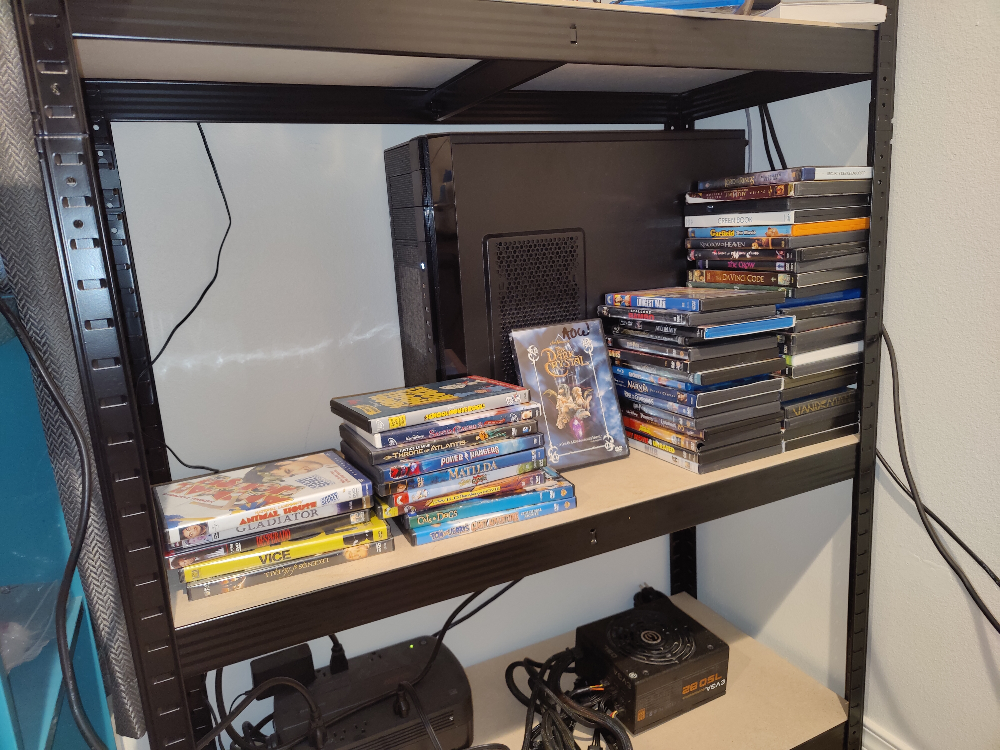
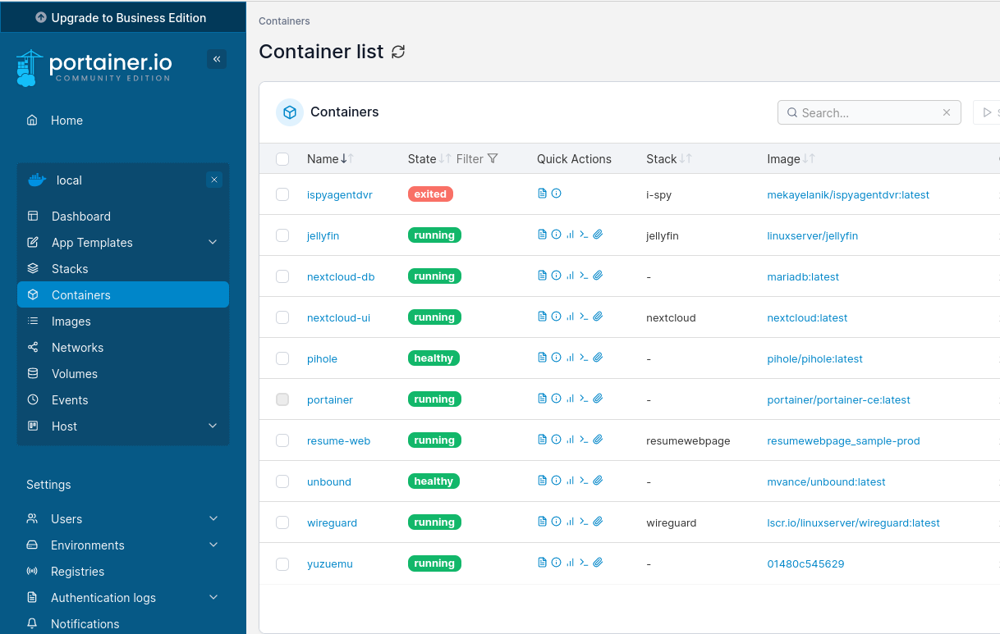
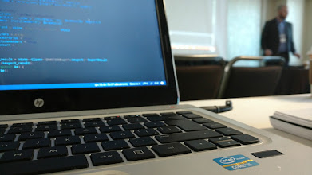

Agentic workflows
Claude Code daily: plan, build, test and review loops across multi-repo codebases.
Senior Software Engineer
Full-stack .NET and React engineer. I build and modernize enterprise software, and I use AI agents to ship code, tests and reviews faster.
Career
My two most recent roles. The full history is on LinkedIn and in my resume.
Jul 2023 – Present
Applied Systems · Epic insurance platform
gRPCKubernetesDockerTiltSQL ServerClaude CodeMCP.NETReact
Jun 2022 – May 2023
Comcast Business · Seattle, WA
ReactBootstrap.NETNestJSAngularMongoDBPostgreSQLCloud Foundry
Sep 2020 – Jun 2022
Aptude · Client: USXpress · Mexico
C#.NET CoreReactBootstrapAzure DevOpsEFT-SQL
Nov 2019 – Sep 2020
Microsoft · Azure Global, Customer Analytics · Redmond, WA
Angular.NET CoreSQL ServerBDDAzure DevOps
May 2017 – Nov 2019
NearShore Technology · Mexico
.NET CoreAngularC++VB6SQL Server
Aug 2016 – May 2017
MarathonGroup Mexico
CakePHPMySQLSOAPAndroid
Sep 2015 – Aug 2016
Softtek · Client: General Electric (Aviation) · Aguascalientes, Mexico
C#VB6C++SQL Server
Sep 2014 – Sep 2015
Gameloft · Mexico
PHPMySQLC++C#OpenGL
Feb 2014 – Jul 2014
Tenaris Tamsa · Veracruz, Mexico
C#Excel VBAOracle
How I work today
Models write, test and review code under my direction, inside guardrails I design. Every merge is still a human decision.
Claude Code daily: plan, build, test and review loops across multi-repo codebases.
Specialized agents for research, running tests and writing tests, each on the right model.
Repeatable procedures packaged as skills. Third-party skills get a code review first.
Model Context Protocol connects LLMs to internal tools, code navigation and memory.
CLAUDE.md rules, memory, hooks, tool calling and RAG: the smallest accurate context.
Self-hosted models on my own Linux server for privacy, cost control and offline work.
Toolbox
Background
Senior full-stack engineer with 12+ years building and modernizing enterprise systems in C#/.NET, React, Angular and C/C++, for clients like Microsoft, Comcast Business, General Electric and Becton Dickinson.
I have used GNU/Linux for more than 26 years. I contribute to open source and publish Spanish-language tech videos.
B.S. Computer Systems Engineering
National Institute of Technology of Mexico · 2009 – 2014

Hosts this site, my services and local LLM experiments.

Every service runs in its own container, isolated and easy to redeploy.

SSH keys, firewalls and minimal port forwarding keep the attack surface small.
Open source
Loading repositories…
YouTube · @GamerEnLinux
Spanish-language content on IT and GNU/Linux.
Loading videos…
Contact
The fastest way to reach me is LinkedIn or Telegram.